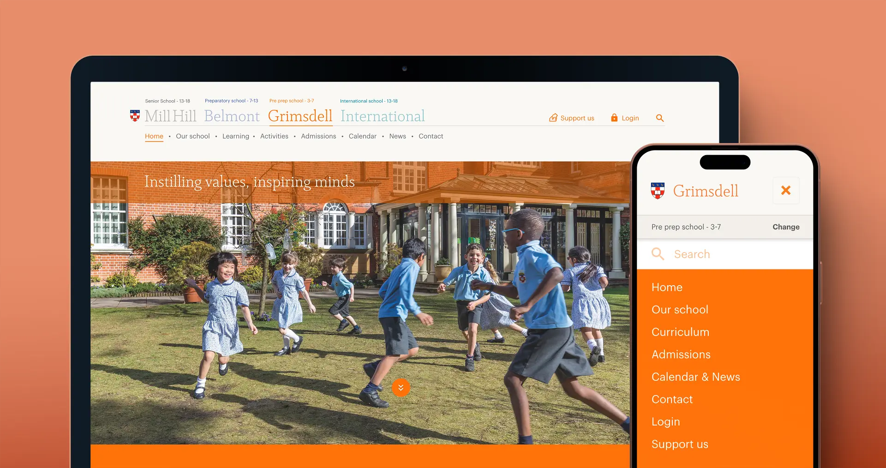
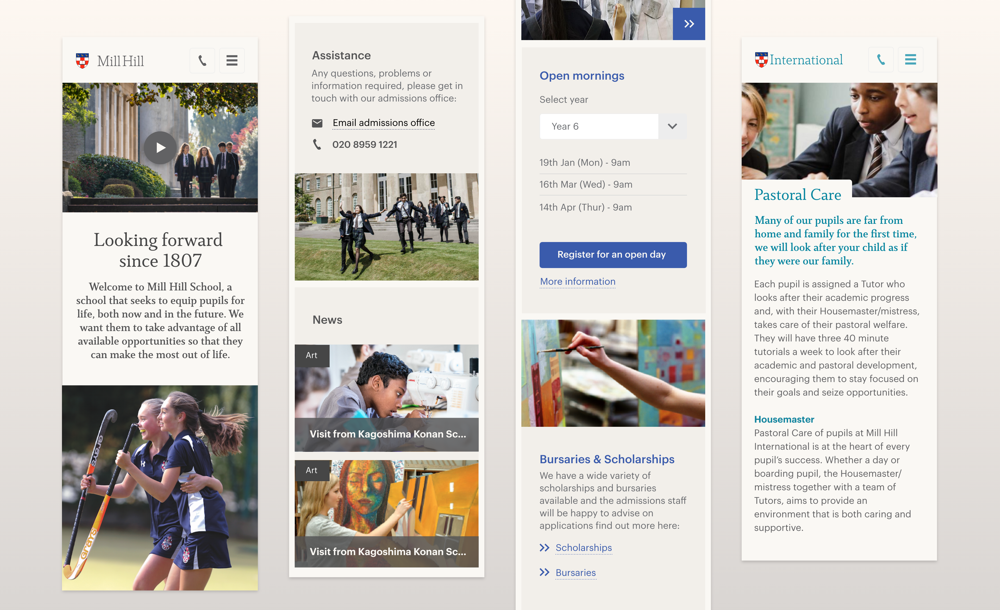
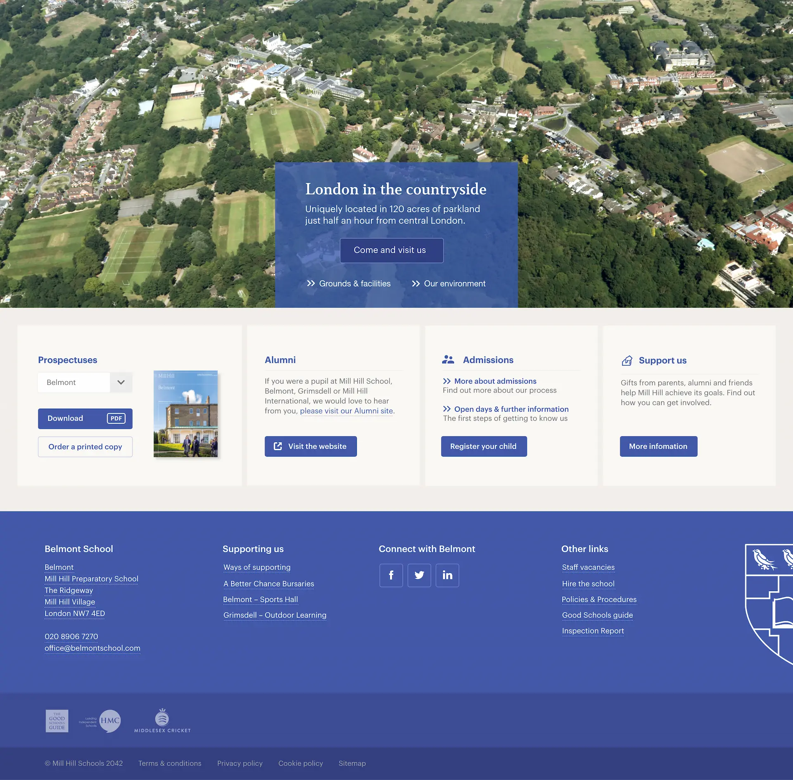

Mill Hill Schools
Based in North London this prestigious group of four independent schools, established in 1807, had four separate main websites run by differing teams with differing approaches. They were in need of a coherent plan, creative strategy and complete UI/UX overhaul to bring the schools and their new brand together online.

The navigation has a unique function of being able to view nav sub sections across all schools via a single page choice. For example by clicking 'News' on one of the schools, you simply click any other school name, to view the news respectively. This was in repsonse to many parents saying they found it hard to navigate across the schools.
I felt the navigation of the four schools should be as aligned as possible. To bring this about required lobbying the schools on their differing approaches and thinking. The result: a more cohesive and intuitive user experience. Yay!

A small sample of the Mill Hill Schools design style guide. This exhaustive guide formed the blueprint for the component library, which in turn, laid the foundation for successful brand and style implementation across mobile, tablet and desktop.

Some of the components for mobile: videos and imagery, to news, headers and promo boxes.
